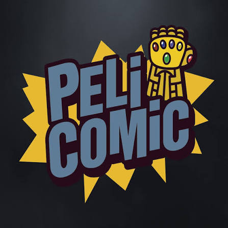
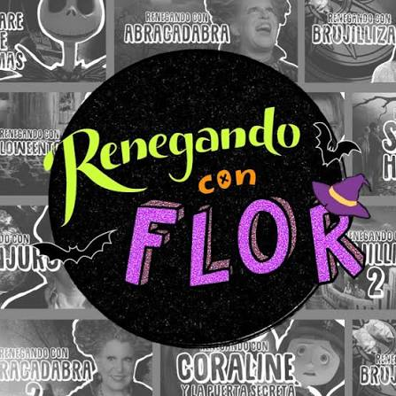

🎬
EL CINE
Descubrir películas, analizar historias y compartir mis opiniones.

Amante del cine, las series y las historias que nos acompañan durante toda la vida. Bienvenido a este pequeño espacio donde comparto una de mis mayores pasiones.
CONÓCEME
¡Hola! Soy Stalin, un apasionado del cine, las series y el mundo audiovisual. Me encanta descubrir nuevas historias, regresar a las películas que marcaron mi infancia y analizar los personajes que han conseguido emocionarme.
Actualmente estudio Multimedia y Producción Audiovisual, una carrera que me permite aprender más sobre la creación de contenido, la edición, el diseño y las diferentes formas de contar historias.
A través de Que Hay de Nuevo comparto mis opiniones y reflexiones, combinando mi pasión por el cine con mi interés por la producción audiovisual.
Desde pequeño, las películas y las series han formado parte de mi vida. Siempre me ha gustado descubrir nuevos mundos, conocer personajes y emocionarme con historias que parecen quedarse conmigo incluso después de terminar.
Con el tiempo, esa afición se convirtió en algo más: no solo quería ver películas, también quería hablar de ellas, compartir mis opiniones y comprender por qué algunas historias nos marcan tanto.
Así nació mi interés por crear contenido audiovisual y encontrar una forma de expresar todo lo que el cine significa para mí.

Que Hay de Nuevo es mi espacio para compartir todo lo que me gusta del cine y las series.
En el canal realizo resúmenes, opiniones, análisis de personajes, tops y videos dedicados a las películas y series que marcaron nuestra infancia.
También disfruto explorar el cine de superhéroes, sus conexiones y las historias que forman parte de grandes universos cinematográficos.
Mi objetivo es crear un lugar donde podamos recordar, descubrir y conversar sobre nuestras historias favoritas.
VISITAR MI CANALAlgunas de las actividades que disfruto y que forman parte de mi creatividad.
Descubrir películas, analizar historias y compartir mis opiniones.
Acompañar a los personajes durante sus aventuras y recordar mis favoritas.
Transformar ideas en videos y experimentar con el lenguaje audiovisual.
Expresar mi creatividad a través de ilustraciones y nuevos personajes.
Cada video requiere tiempo, dedicación y muchas ideas.
Todo comienza con una película, una serie o un personaje del que quiero hablar.
Organizo mis ideas, investigo y preparo lo que quiero contar.
Combino imágenes, sonido, narración y recursos visuales para construir el video.
Finalmente comparto el resultado con quienes disfrutan estas historias.
"Las historias no terminan cuando aparecen los créditos. Continúan viviendo en nosotros."
Una forma de entender mi pasión por el cine.
Todos necesitamos una inpiracion, un punto de partida, alguien a quien seguir.



Sígueme para descubrir nuevos videos, compartir opiniones y seguir hablando de nuestras historias favoritas.